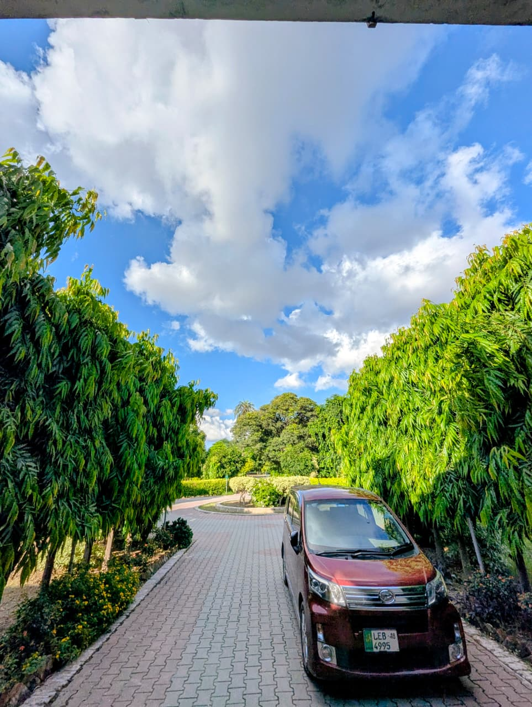
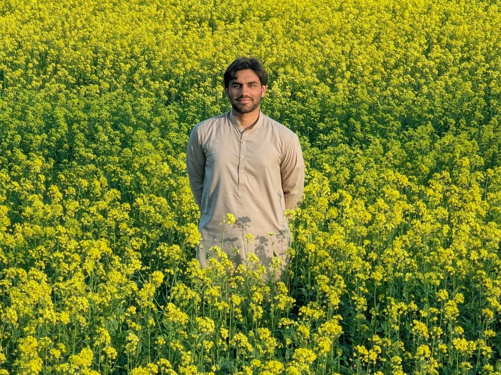
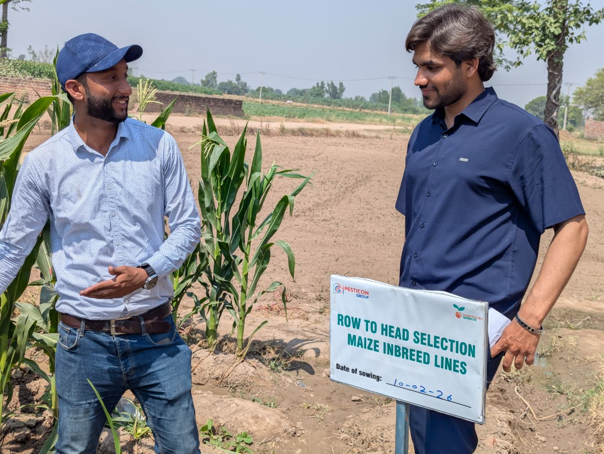

M.Sc. (Hons.) Plant Breeding & Genetics | Bioinformatics & Agricultural Innovation
Explore ScholarshipsResearch-focused plant breeding graduate with training in molecular techniques, biometric analysis, genome-wide association studies, and field breeding trials. Passionate about agricultural advancements, bioinformatics, and guiding students toward international research scholarships.

University of the Punjab, Lahore

In-Silico Genome Wide Analysis & Marker Trials

Hybrid seed development and evaluation
Opportunities for M.Sc. & Ph.D. students in Plant Biotechnology, Genomics, and Sustainable Farming.
Learn MoreFunding programs for rural development, environmental sustainability, and agricultural research.
Learn MoreFully funded masters and doctoral positions across European and Asian research institutions.
Learn MoreData mining and functional characterization of gene families (YABBY, PR1) in plants.
PCR, SSR/RAPD markers, and high-yield crop improvement trials.
GGE biplot statistical evaluation for crop phenotype and environment interactions.
For scholarship assistance, research collaboration, or commercial inquiries, contact me below: